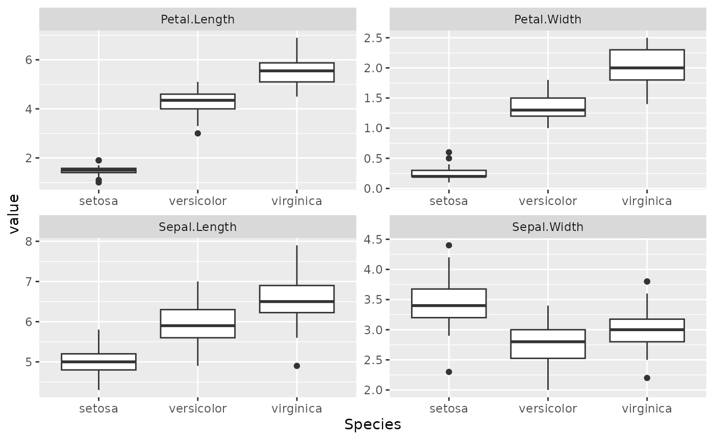
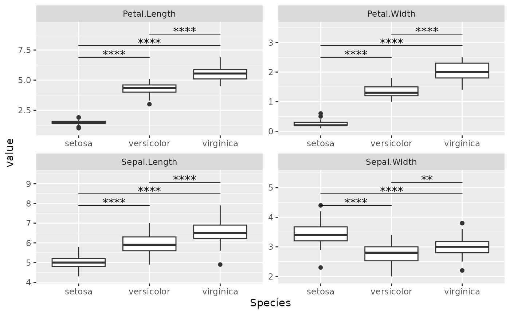
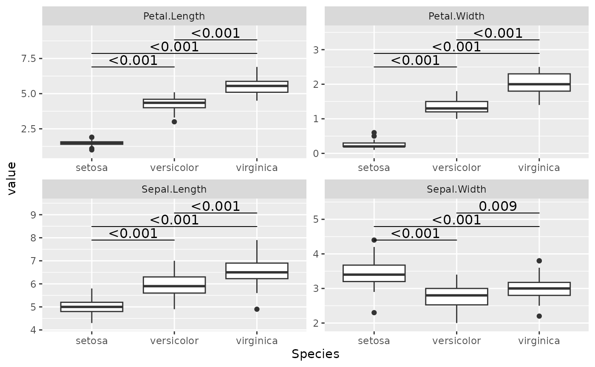
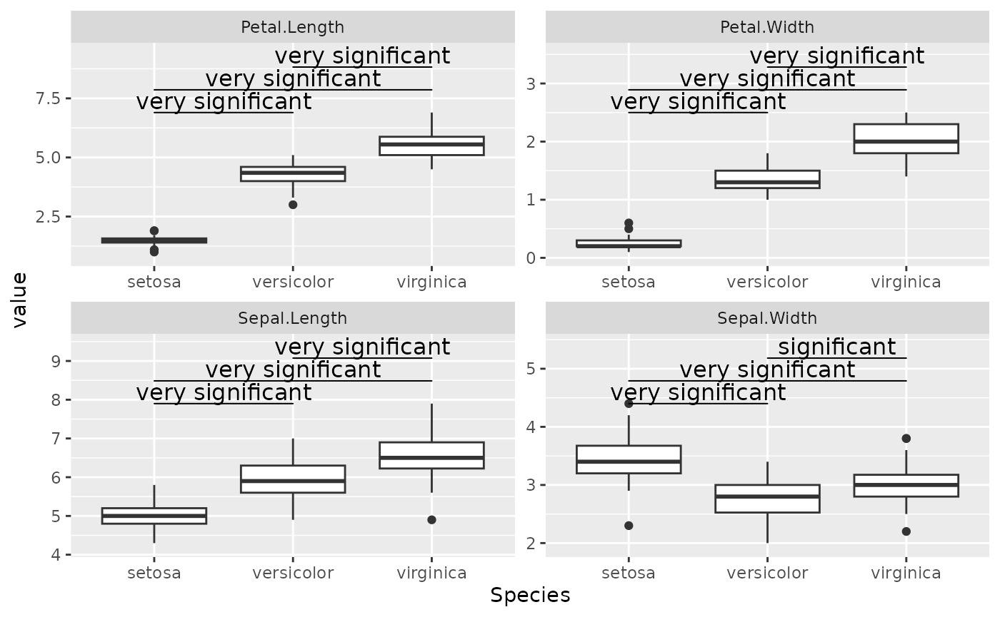
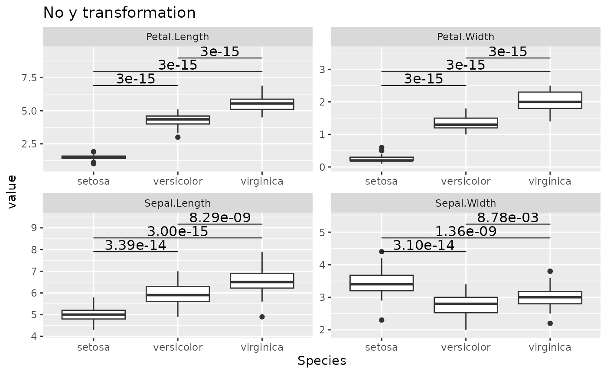
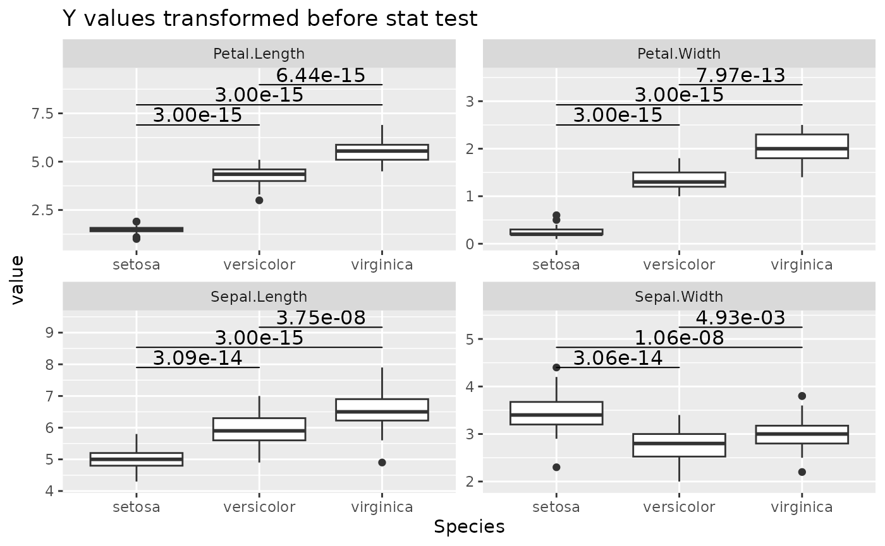
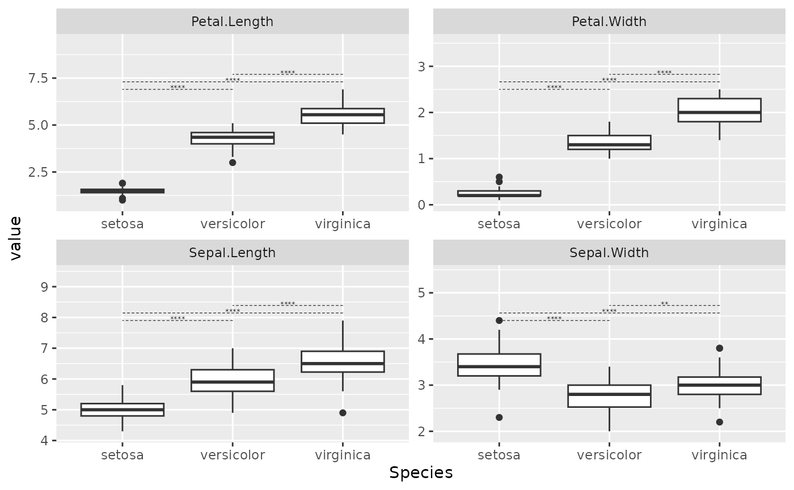
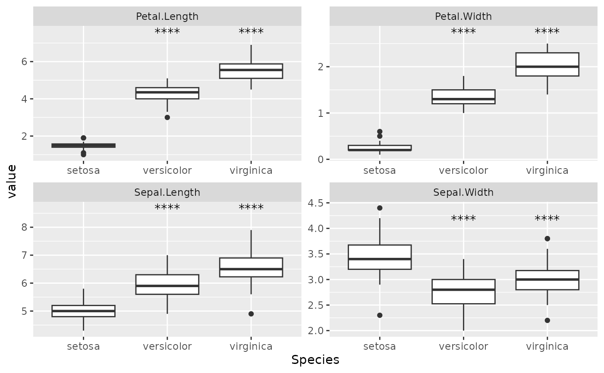
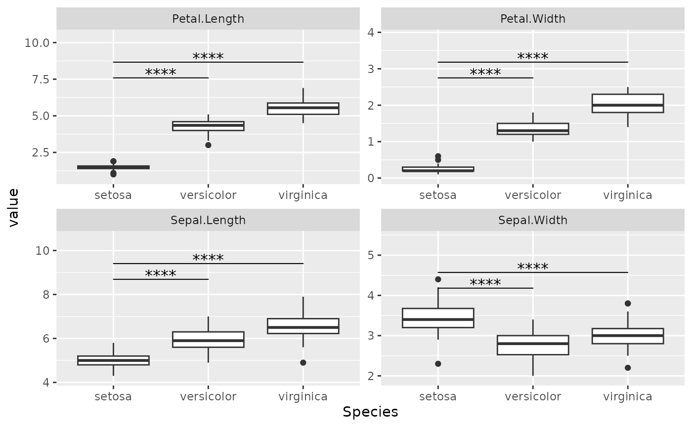

Getting Started
Getting-Started.Rmd
library(ggplot2)
library(ggmulticomp)
df = iris |>
tidyr::pivot_longer(-Species)
base_plot = df |>
ggplot(aes(x = Species, y = value)) +
geom_boxplot() +
facet_wrap(vars(name), scales = "free")
base_plot
Tukey Test
Simply add stat_tukey() layer to your ggplot object. It
will run Tukey test and show statistical significance for you. You will
have to play around with ggplot2::scale_y_continuous() so
the significance marker is present.
base_plot +
stat_tukey() +
scale_y_continuous(expand = expansion(mult = c(0.1, 0.5)))
You can use the p.format argument to change how p-values
are presented. Two common options are
scales::label_pvalue() or
scales::label_number_auto().
base_plot +
stat_tukey(p.format = scales::label_pvalue()) +
scale_y_continuous(expand = expansion(mult = c(0.1, 0.5)))
You can also implement your own function to format it. This function should accept double as input, and return a character to be displayed.
my_format = function(x) {
dplyr::case_when(
x < 0.001 ~ "very significant",
x < 0.05 ~ "significant",
TRUE ~ "not significant"
)
}
base_plot +
stat_tukey(p.format = my_format) +
scale_y_continuous(expand = expansion(mult = c(0.1, 0.5)))
By default, stat_tukey perform statistical tests on the
values that are being presented in ggplot. That is, if you add
scale_y_log2() to your ggplot, the statistic results will
be performed on the log2-transformed y-values. If this is not a desired
behavior, the trans_value argument allow you to apply a
transformation function to the y-values before running the statistical
test.
base_plot +
stat_tukey(p.format = scales::label_scientific()) +
scale_y_continuous(expand = expansion(mult = c(0.1, 0.5))) +
labs(title = "No y transformation")
base_plot +
stat_tukey(trans_value = log2, p.format = scales::label_scientific()) +
scale_y_continuous(expand = expansion(mult = c(0.1, 0.5))) +
labs(title = "Y values transformed before stat test")
You can fine tune some of the aesthetic parameters in case they do not look good by default.
base_plot +
stat_tukey(text_size = 5, line_size = 0.5, linetype = 2) +
scale_y_continuous(expand = expansion(mult = c(0.1, 0.5)))
The comparisons() parameter allows only selected
comparisons to be displayed. This parameter doesn’t change the
underlying statistics (all groups will be included in statistical
test).
base_plot +
stat_tukey(comparisons = list(c(1, 2))) +
scale_y_continuous(expand = expansion(mult = c(0.1, 0.3)))
Dunnett
Dunnett test works similar to Tukey test. The parameter should work
similarly. One key distinction is that stat_dunnett() shows
the p-values at the top of the group
base_plot +
stat_dunnett()
A different style of alignment can be used.
base_plot +
stat_dunnett(p.y_align = 2)
If you want explicitly show which comparisons are made, use
GeomBracket as the geom.
base_plot +
stat_dunnett(geom = "bracket") +
scale_y_continuous(expand = expansion(mult = c(0.1, 0.5)))